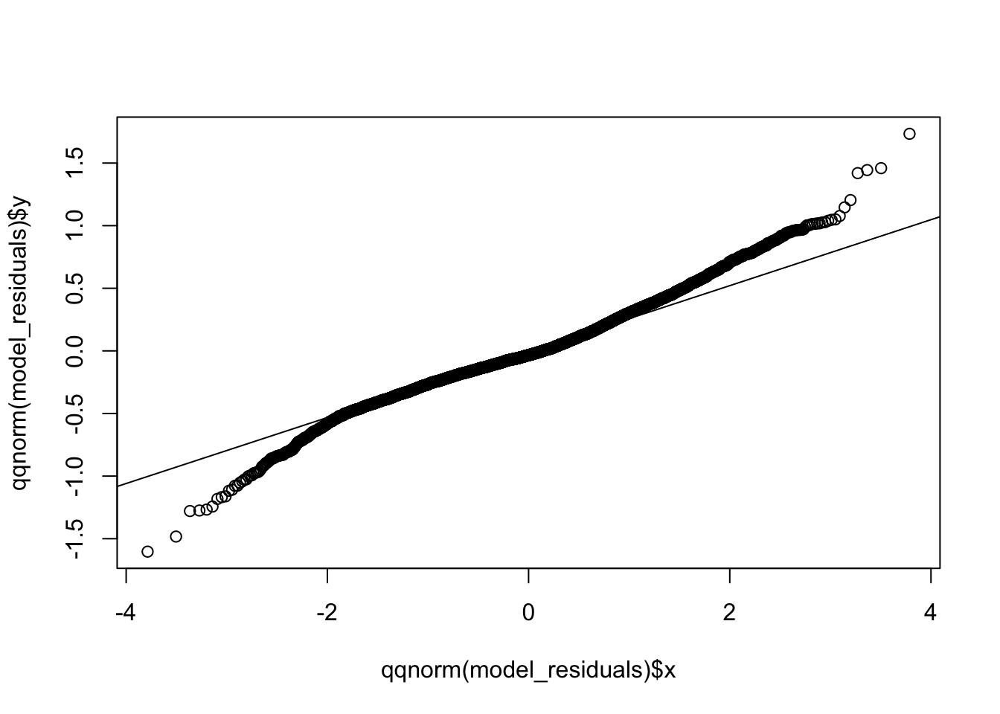

This project demonstrates on the regression model using multiple linear regression algorithm in R. I have used air quality dataset. This dataset contains the responses of a gas multisensor device deployed on the field in an Italian city. Hourly responses averages are recorded along with gas concentrations references from a certified analyzer.
The dataset contains 9358 instances of hourly averaged responses from an array of 5 metal oxide chemical sensors embedded in an Air Quality Chemical Multisensor Device. The device was located on the field in a significantly polluted area, at road level,within an Italian city.
You can access the dataset and its information from the following link: https://archive.ics.uci.edu/ml/datasets/Air+Quality#
Data were recorded from March 2004 to February 2005 (one year)representing the longest freely available recordings of on field deployed air quality chemical sensor devices responses. Ground Truth hourly averaged concentrations for CO, Non Metanic Hydrocarbons, Benzene, Total Nitrogen Oxides (NOx) and Nitrogen Dioxide (NO2) and were provided by a co-located reference certified analyzer.
Missing values are tagged with -200 value.
Attribute Information:
Date (DD/MM/YYYY)
Time (HH.MM.SS)
CO.GT. - True hourly averaged concentration CO in mg/m^3 (reference analyzer)
PT08.S1(CO)-Tin oxide hourly averaged sensor response (nominally CO targeted).
C6H6(GT)-True hourly averaged Benzene concentration in microg/m^3 (reference analyzer).
PT08.S2(NMHC)-Titania hourly averaged sensor response (nominally NMHC targeted).
NOx(GT)-True hourly averaged NOx concentration in ppb (reference analyzer)
PT08.S3(NOx)-Tungsten oxide hourly averaged sensor response (nominally NOx targeted).
NO2(GT)-True hourly averaged NO2 concentration in microg/m^3 (reference analyzer).
PT08.S4 (tungsten oxide)-hourly averaged sensor response (nominally NO2 targeted).
PT08.S5 (indium oxide)-hourly averaged sensor response (nominally O3 targeted).
Temperature-Temperature in °C.
Humidity-Relative Humidity (%).
AH-Absolute Humidity.
# Loading Air Quality dataset
airquality_df <- read.csv("../Data/Regression/AirQualityUCI.csv", header = TRUE, sep = ";")
# Make a copy of the dataframe for EDA
airquality <- airquality_df
# view data set
head(airquality, n=5)## Date Time CO.GT. PT08.S1.CO. NMHC.GT. C6H6.GT. PT08.S2.NMHC.
## 1 10/03/2004 18.00.00 2,6 1360 150 11,9 1046
## 2 10/03/2004 19.00.00 2 1292 112 9,4 955
## 3 10/03/2004 20.00.00 2,2 1402 88 9,0 939
## 4 10/03/2004 21.00.00 2,2 1376 80 9,2 948
## 5 10/03/2004 22.00.00 1,6 1272 51 6,5 836
## NOx.GT. PT08.S3.NOx. NO2.GT. PT08.S4.NO2. PT08.S5.O3. T RH AH X X.1
## 1 166 1056 113 1692 1268 13,6 48,9 0,7578 NA NA
## 2 103 1174 92 1559 972 13,3 47,7 0,7255 NA NA
## 3 131 1140 114 1555 1074 11,9 54,0 0,7502 NA NA
## 4 172 1092 122 1584 1203 11,0 60,0 0,7867 NA NA
## 5 131 1205 116 1490 1110 11,2 59,6 0,7888 NA NA# Dimension of the dataset
dim(airquality)## [1] 9471 17# Inspecting the datatypes of the variables
str(airquality)## 'data.frame': 9471 obs. of 17 variables:
## $ Date : chr "10/03/2004" "10/03/2004" "10/03/2004" "10/03/2004" ...
## $ Time : chr "18.00.00" "19.00.00" "20.00.00" "21.00.00" ...
## $ CO.GT. : chr "2,6" "2" "2,2" "2,2" ...
## $ PT08.S1.CO. : int 1360 1292 1402 1376 1272 1197 1185 1136 1094 1010 ...
## $ NMHC.GT. : int 150 112 88 80 51 38 31 31 24 19 ...
## $ C6H6.GT. : chr "11,9" "9,4" "9,0" "9,2" ...
## $ PT08.S2.NMHC.: int 1046 955 939 948 836 750 690 672 609 561 ...
## $ NOx.GT. : int 166 103 131 172 131 89 62 62 45 -200 ...
## $ PT08.S3.NOx. : int 1056 1174 1140 1092 1205 1337 1462 1453 1579 1705 ...
## $ NO2.GT. : int 113 92 114 122 116 96 77 76 60 -200 ...
## $ PT08.S4.NO2. : int 1692 1559 1555 1584 1490 1393 1333 1333 1276 1235 ...
## $ PT08.S5.O3. : int 1268 972 1074 1203 1110 949 733 730 620 501 ...
## $ T : chr "13,6" "13,3" "11,9" "11,0" ...
## $ RH : chr "48,9" "47,7" "54,0" "60,0" ...
## $ AH : chr "0,7578" "0,7255" "0,7502" "0,7867" ...
## $ X : logi NA NA NA NA NA NA ...
## $ X.1 : logi NA NA NA NA NA NA ...some of the attributes has numeric values seperated by comma, instead of periods, and hence of chr datatype. We need to replace ‘,’ by ‘.’ and convert those attributes into numeric datatypes.
# Replace commas with periods in relevant columns
cols_with_commas <- c("CO.GT.", "PT08.S1.CO.", "NMHC.GT.", "C6H6.GT.", "PT08.S2.NMHC.", "NOx.GT.", "PT08.S3.NOx.", "NO2.GT.", "PT08.S4.NO2.", "PT08.S5.O3.", "T", "RH", "AH")
airquality[, cols_with_commas] <- apply(airquality[, cols_with_commas], 2, function(x) as.numeric(gsub(",", ".", x)))Now, let’s inspect the datatypes of all the variables again.
# Inspecting the datatypes of the variables
str(airquality)## 'data.frame': 9471 obs. of 17 variables:
## $ Date : chr "10/03/2004" "10/03/2004" "10/03/2004" "10/03/2004" ...
## $ Time : chr "18.00.00" "19.00.00" "20.00.00" "21.00.00" ...
## $ CO.GT. : num 2.6 2 2.2 2.2 1.6 1.2 1.2 1 0.9 0.6 ...
## $ PT08.S1.CO. : num 1360 1292 1402 1376 1272 ...
## $ NMHC.GT. : num 150 112 88 80 51 38 31 31 24 19 ...
## $ C6H6.GT. : num 11.9 9.4 9 9.2 6.5 4.7 3.6 3.3 2.3 1.7 ...
## $ PT08.S2.NMHC.: num 1046 955 939 948 836 ...
## $ NOx.GT. : num 166 103 131 172 131 89 62 62 45 -200 ...
## $ PT08.S3.NOx. : num 1056 1174 1140 1092 1205 ...
## $ NO2.GT. : num 113 92 114 122 116 96 77 76 60 -200 ...
## $ PT08.S4.NO2. : num 1692 1559 1555 1584 1490 ...
## $ PT08.S5.O3. : num 1268 972 1074 1203 1110 ...
## $ T : num 13.6 13.3 11.9 11 11.2 11.2 11.3 10.7 10.7 10.3 ...
## $ RH : num 48.9 47.7 54 60 59.6 59.2 56.8 60 59.7 60.2 ...
## $ AH : num 0.758 0.726 0.75 0.787 0.789 ...
## $ X : logi NA NA NA NA NA NA ...
## $ X.1 : logi NA NA NA NA NA NA ...# Convert date and time columns to a single datetime column
airquality$datetime <- ymd_hms(paste(airquality$Date, airquality$Time, sep = " "))## Warning: 114 failed to parse.# Remove the original date and time columns
airquality <- airquality %>% select(-Date, -Time)On observation, we can see that last two columns, “X” and “X.1” has all null values, and hence will be removed.
# Remove the X and X.1 columns
airquality <- select(airquality, -c(X, X.1))
# Remove duplicates
airquality <- distinct(airquality)# Delete rows with all missing values
airquality <- airquality[complete.cases(airquality),]
# Check for missing values
sum(is.na(airquality))## [1] 0The missing values in the dataset are tagged with -200 value. These needs to be replaced with NAs and dealt accordingly.
# Replace missing values (-200) with NA
airquality[airquality == -200] <- NA
# Check for missing values
colSums(is.na(airquality))## CO.GT. PT08.S1.CO. NMHC.GT. C6H6.GT. PT08.S2.NMHC.
## 1683 366 8443 366 366
## NOx.GT. PT08.S3.NOx. NO2.GT. PT08.S4.NO2. PT08.S5.O3.
## 1639 366 1642 366 366
## T RH AH datetime
## 366 366 366 0Looking into the missing values in each columns, we observe that column “NMHC.GT.” has 90% of missin values, and hence the column could be deleted.
# Remove the NMHC.GT. column
airquality <- select(airquality, -c(NMHC.GT.))Other missing values in the numeric columns of the “airquality” data frame could be replaced with the corresponding median values.
# Calculate the median of each numeric column
medians <- sapply(Filter(is.numeric, airquality), median, na.rm = TRUE)
# Replace missing values with median values for numeric columns
for (col in names(Filter(is.numeric, airquality))) {
airquality[is.na(airquality[[col]]) & sapply(airquality[[col]], is.numeric), col] <- medians[col]
}
# Check for missing values
colSums(is.na(airquality))## CO.GT. PT08.S1.CO. C6H6.GT. PT08.S2.NMHC. NOx.GT.
## 0 0 0 0 0
## PT08.S3.NOx. NO2.GT. PT08.S4.NO2. PT08.S5.O3. T
## 0 0 0 0 0
## RH AH datetime
## 0 0 0The colSums() function should return a
vector of zeros, indicating that there are no missing values remaining
in the modified “airquality” data frame.
# Convert column names to indices
numeric_cols <- which(sapply(airquality, is.numeric))
# Display summary statistics for all numeric variables
summary(airquality[numeric_cols])## CO.GT. PT08.S1.CO. C6H6.GT. PT08.S2.NMHC.
## Min. : 0.100 Min. : 647 Min. : 0.10 Min. : 383
## 1st Qu.: 1.200 1st Qu.: 941 1st Qu.: 4.60 1st Qu.: 743
## Median : 1.800 Median :1063 Median : 8.20 Median : 909
## Mean : 2.089 Mean :1098 Mean :10.01 Mean : 938
## 3rd Qu.: 2.600 3rd Qu.:1221 3rd Qu.:13.60 3rd Qu.:1105
## Max. :11.900 Max. :2040 Max. :63.70 Max. :2214
## NOx.GT. PT08.S3.NOx. NO2.GT. PT08.S4.NO2.
## Min. : 2.0 Min. : 322.0 Min. : 2.0 Min. : 551
## 1st Qu.: 112.0 1st Qu.: 666.0 1st Qu.: 86.0 1st Qu.:1242
## Median : 180.0 Median : 806.0 Median :109.0 Median :1463
## Mean : 235.2 Mean : 834.3 Mean :112.4 Mean :1457
## 3rd Qu.: 284.0 3rd Qu.: 960.0 3rd Qu.:133.0 3rd Qu.:1662
## Max. :1479.0 Max. :2683.0 Max. :340.0 Max. :2775
## PT08.S5.O3. T RH AH
## Min. : 221 Min. :-1.9 Min. : 9.20 Min. :0.1847
## 1st Qu.: 742 1st Qu.:12.0 1st Qu.:36.60 1st Qu.:0.7461
## Median : 963 Median :17.8 Median :49.60 Median :0.9954
## Mean :1021 Mean :18.3 Mean :49.25 Mean :1.0244
## 3rd Qu.:1255 3rd Qu.:24.1 3rd Qu.:61.90 3rd Qu.:1.2962
## Max. :2523 Max. :44.6 Max. :88.70 Max. :2.2310The numeric columns in the “airquality” data frame should be transformed such that their mean is zero and their standard deviation is one. This is often desirable when performing statistical analyses or machine learning on the data, as it can help to reduce the impact of outliers and ensure that all variables are on a comparable scale.
It is important to note that scaling the data in this way will not affect any categorical or non-numeric columns in the “airquality” data frame. If there are any categorical or non-numeric columns in the data frame, they will be left unchanged by this code.
# Scale the numeric columns to have zero mean and unit variance
airquality[numeric_cols] <- scale(airquality[numeric_cols])Finally, let’s check the dimension of the dataset.
dim(airquality)## [1] 9357 13head(airquality)## CO.GT. PT08.S1.CO. C6H6.GT. PT08.S2.NMHC. NOx.GT. PT08.S3.NOx.
## 1 0.38600794 1.2287153 0.25856287 0.412903374 -0.3545981 0.8802709
## 2 -0.06749848 0.9093337 -0.08335155 0.065078032 -0.6775243 1.3488803
## 3 0.08367033 1.4259804 -0.13805786 0.003921928 -0.5340015 1.2138572
## 4 0.08367033 1.3038639 -0.11070471 0.038322237 -0.3238432 1.0232365
## 5 -0.36983609 0.8153979 -0.47997229 -0.389770491 -0.5340015 1.4719895
## 6 -0.67217370 0.4631388 -0.72615068 -0.718484549 -0.7492856 1.9961966
## NO2.GT. PT08.S4.NO2. PT08.S5.O3. T RH AH
## 1 0.01425979 0.69385006 0.6331797 -0.5425565 -0.02053079 -0.6733170
## 2 -0.46357201 0.30194750 -0.1242701 -0.5772056 -0.09122320 -0.7549077
## 3 0.03701368 0.29016096 0.1367430 -0.7389016 0.27991193 -0.6925148
## 4 0.21904485 0.37561340 0.4668478 -0.8428491 0.63337395 -0.6003148
## 5 0.08252147 0.09862963 0.2288653 -0.8197497 0.60980982 -0.5950102
## 6 -0.37255643 -0.18719404 -0.1831260 -0.8197497 0.58624568 -0.6051143
## datetime
## 1 2010-03-20 04:18:00
## 2 2010-03-20 04:19:00
## 3 2010-03-20 04:20:00
## 4 2010-03-20 04:21:00
## 5 2010-03-20 04:22:00
## 6 2010-03-20 04:23:00# Plot histograms for all columns except datetime
ggplot(melt(airquality, id.vars = "datetime"), aes(x = value)) +
geom_histogram() +
facet_wrap(~variable, scales = "free") +
theme_bw() +
labs(title="Histogram for each variable")## `stat_bin()` using `bins = 30`. Pick better value with `binwidth`.Note that melt function from the reshape2 package is used to reshape the data frame from wide to long format, which is required by the ggplot function
From the above histogram graph, it is evident all the distribution of all the attributes are skewed.
Now let’s look at the spread of the humidity over time.
# Time series plot of AH levels over time
ggplot(data = airquality, aes(x = datetime, y = AH)) +
geom_line(color = "blue") +
labs(x = "Datetime", y = "AH levels", title = "Absolute Humidity over time")Now, its important to look at the correlation of the attributes before we proceed building a model.
# Plot a scatterplot of T vs. AH
ggplot(airquality, aes(x=T, y=AH)) +
geom_point(color = "blue") +
ggtitle("Scatter plot for Absolute humudity")The scatter plot giving a relationship between the variables Temperature and Absolute Humidity infers that as temperature increases, humidity increases giving a strong positive correlation between variables.
Similarly from the scatter of Temperature and RH levels, we can infer that there is a strong negative correlation between the variables.
# Analyze relationships between variables
# Scatter plot of T vs. RH levels
ggplot(data = airquality, aes(x = T, y = RH)) +
geom_point(color = "blue") +
labs(x = "Temperature", y = "RH levels", title = "Temperature vs. RH levels")Now, let’s try to see the graphical representation of the distribution of data based on the five-number summary (minimum, first quartile, median, third quartile, and maximum). It is useful for detecting outliers and understanding the spread and skewness of the data.
ggplot(melt(airquality, id.vars = "datetime"), aes(x = "", y = value)) +
geom_boxplot() +
facet_wrap(~variable, scales = "free") +
theme_bw() +
labs(title="Boxplot for each variable")From the box plot, we can observe the following:
The variables “CO.GT.”, “C6H6.GT.”, “NOx.GT.”, “NO2.GT.”, “T”, “RH”, and “AH” have outliers, which are represented as individual points beyond the whiskers.
The variables “PT08.S1.CO.”, “PT08.S2.NMHC.”, “PT08.S3.NOx.”, “PT08.S4.NO2.”, and “PT08.S5.O3.” do not have any outliers.
The variables “CO.GT.” and “NOx.GT.” have a similar median value and similar IQR, indicating that they have similar distributions.
The variable “C6H6.GT.” has a larger IQR compared to the other variables, indicating that it has a larger spread of values.
The variable “RH” has a median value that is closer to the upper quartile, indicating that it is skewed towards higher values.
The variable “T” has a symmetric distribution, as the median is approximately in the middle of the box.
# Set the seed for reproducibility
set.seed(123)
# Split the data into training and testing sets
train_index <- createDataPartition(airquality$AH, p = 0.7, list = FALSE)
train_data <- airquality[train_index, ]
test_data <- airquality[-train_index, ]# Fit a multiple regression model
model <- lm(AH ~ ., data = train_data[, numeric_cols])
# Print the summary of the model
summary(model)##
## Call:
## lm(formula = AH ~ ., data = train_data[, numeric_cols])
##
## Residuals:
## Min 1Q Median 3Q Max
## -1.60325 -0.18288 -0.03489 0.17257 1.73359
##
## Coefficients:
## Estimate Std. Error t value Pr(>|t|)
## (Intercept) -0.001102 0.003817 -0.289 0.773
## CO.GT. -0.039388 0.008760 -4.496 7.03e-06 ***
## PT08.S1.CO. -0.125375 0.010825 -11.582 < 2e-16 ***
## C6H6.GT. 0.316457 0.023782 13.306 < 2e-16 ***
## PT08.S2.NMHC. -0.713497 0.029327 -24.329 < 2e-16 ***
## NOx.GT. 0.091137 0.008926 10.211 < 2e-16 ***
## PT08.S3.NOx. -0.247391 0.008370 -29.558 < 2e-16 ***
## NO2.GT. -0.085972 0.007176 -11.981 < 2e-16 ***
## PT08.S4.NO2. 0.377287 0.012966 29.099 < 2e-16 ***
## PT08.S5.O3. 0.087337 0.011137 7.842 5.14e-15 ***
## T 0.891317 0.009388 94.947 < 2e-16 ***
## RH 0.618496 0.007737 79.940 < 2e-16 ***
## ---
## Signif. codes: 0 '***' 0.001 '**' 0.01 '*' 0.05 '.' 0.1 ' ' 1
##
## Residual standard error: 0.3089 on 6540 degrees of freedom
## Multiple R-squared: 0.9044, Adjusted R-squared: 0.9042
## F-statistic: 5624 on 11 and 6540 DF, p-value: < 2.2e-16# Generate predictions on the test set
predictions <- predict(model, newdata = test_data[, numeric_cols])# Calculate RMSE
rmse <- sqrt(mean((test_data$AH - predictions)^2))
# Calculate R-squared
r_squared <- cor(test_data$AH, predictions)^2
# Print the results
cat("RMSE:", rmse, "\n")## RMSE: 0.3067288cat("R-squared:", r_squared, "\n")## R-squared: 0.9067064This can be shown in R using the hist() function.
# Get the model residuals
model_residuals = model$residuals
# Plot the result
hist(model_residuals)It appears that the histogram of the data is skewed to the left, which may indicate that the data is not normally distributed. Therefore, it may not be appropriate to rely on the histogram to assess the normality of the data with a high degree of confidence. Alternatively, we can examine the residuals using a normal Q-Q plot, which can provide a more reliable indication of normality. Specifically, if the data is normally distributed, the residuals should follow a straight line on the Q-Q plot.
# Get the model residuals
model_residuals = model$residuals
# Plot the Q-Q plot
plot(qqnorm(model_residuals))+
qqline(model_residuals)
## integer(0)From the plot, we can observe that a huge portions of the residuals lie in a straight line and very few residuals do not fall close to the line (end of the right tail and towards the end of the left tail) and there are some deviations from normality. Thus we can assume that the residuals of the model do follow a normal distribution.
Multicollinearity refers to the situation where two or more predictor variables in a regression model are highly correlated with each other, which can cause problems such as unstable coefficient estimates, inflated standard errors, and reduced predictive accuracy.
There are several ways to check for multicollinearity in a regression model, including:
Correlation matrix
Variance Inflation Factor (VIF)
Compute the pairwise correlation coefficients between the predictor variables and look for high correlations (e.g., above 0.8 or 0.9).
# Select predictor variables
predictor_vars <- airquality %>%
select(-c(datetime, AH))
# Compute correlation at 2 decimal places
corr_matrix = round(cor(predictor_vars), 2)
# Compute and show the result
ggcorrplot(corr_matrix, hc.order = TRUE, type = "lower",
lab = TRUE)We can notice two strong correlations because their value is higher than 0.8.
C6H6.GT.
PT08.S2.NMHC.
Compute the VIF for each predictor variable, which measures how much the variance of a coefficient estimate is inflated due to multicollinearity. A VIF above 5 or 10 is often considered indicative of problematic multicollinearity.
# Multicollinearity assumption check - VIF
vif_vals <- vif(model)
print(vif_vals)## CO.GT. PT08.S1.CO. C6H6.GT. PT08.S2.NMHC. NOx.GT.
## 5.254123 8.006075 39.050397 59.306147 5.496029
## PT08.S3.NOx. NO2.GT. PT08.S4.NO2. PT08.S5.O3. T
## 4.871820 3.521260 11.416982 8.544669 6.025732
## RH
## 4.107316Even from the VIF score, we can notice multicollinearity on below two variables
C6H6.GT.
PT08.S2.NMHC.
In this case, we can get rid of these two variables in the dataset.
Now, let’s try to build a second model without those two variables.
# Identify predictor variables with VIF > 10
high_vif_vars <- names(vif_vals[vif_vals > 10])
# Remove predictor variables with high VIF values
reduced_formula <- as.formula(paste("AH ~", paste(setdiff(names(train_data[numeric_cols]),
high_vif_vars), collapse = "+")))
# Fit a new multiple regression model with the reduced formula
reduced_model <- lm(reduced_formula, data = train_data)## Warning in model.matrix.default(mt, mf, contrasts): the response appeared on
## the right-hand side and was dropped## Warning in model.matrix.default(mt, mf, contrasts): problem with term 9 in
## model.matrix: no columns are assigned# Print the summary of the reduced model
summary(reduced_model)##
## Call:
## lm(formula = reduced_formula, data = train_data)
##
## Residuals:
## Min 1Q Median 3Q Max
## -1.79297 -0.17634 -0.01577 0.18245 1.33593
##
## Coefficients:
## Estimate Std. Error t value Pr(>|t|)
## (Intercept) -0.001058 0.004121 -0.257 0.79733
## CO.GT. 0.023528 0.008466 2.779 0.00547 **
## PT08.S1.CO. -0.097102 0.010616 -9.147 < 2e-16 ***
## NOx.GT. -0.007381 0.008574 -0.861 0.38933
## PT08.S3.NOx. -0.107610 0.007561 -14.233 < 2e-16 ***
## NO2.GT. -0.102237 0.007513 -13.607 < 2e-16 ***
## PT08.S5.O3. 0.056258 0.010947 5.139 2.84e-07 ***
## T 1.080033 0.006139 175.931 < 2e-16 ***
## RH 0.784315 0.005887 133.226 < 2e-16 ***
## ---
## Signif. codes: 0 '***' 0.001 '**' 0.01 '*' 0.05 '.' 0.1 ' ' 1
##
## Residual standard error: 0.3335 on 6543 degrees of freedom
## Multiple R-squared: 0.8885, Adjusted R-squared: 0.8884
## F-statistic: 6517 on 8 and 6543 DF, p-value: < 2.2e-16Based on the evaluation metrics you provided, it seems that Model1 with all predictor variables has a higher Multiple R-squared and Adjusted R-squared value (0.9044 and 0.9042) than Model2, which removed the multicollinearity attributes (0.8885 and 0.8884). This indicates that Model1 has a better predictive power and can explain a larger portion of the variance in the outcome variable.
However, Model1 might suffer from multicollinearity, which can lead to unstable coefficient estimates, reduce the model’s interpretability, and increase the variance of the errors. Model2 attempts to address this issue by removing the multicollinearity attributes, but this has led to a reduction in the R-squared values.
Other way of answering this question is to run an analysis of variance (ANOVA) test of the two models. It tests the null hypothesis (H0), where the variables that we removed previously have no significance, against the alternative hypothesis (H1) that those variables are significant.
If the new model is an improvement of the original model, then we fail to reject H0. If that is not the case, it means that those variables were significant; hence we reject H0.
anova(model, reduced_model)## Analysis of Variance Table
##
## Model 1: AH ~ CO.GT. + PT08.S1.CO. + C6H6.GT. + PT08.S2.NMHC. + NOx.GT. +
## PT08.S3.NOx. + NO2.GT. + PT08.S4.NO2. + PT08.S5.O3. + T +
## RH
## Model 2: AH ~ CO.GT. + PT08.S1.CO. + NOx.GT. + PT08.S3.NOx. + NO2.GT. +
## PT08.S5.O3. + T + RH + AH
## Res.Df RSS Df Sum of Sq F Pr(>F)
## 1 6540 624.12
## 2 6543 727.88 -3 -103.76 362.42 < 2.2e-16 ***
## ---
## Signif. codes: 0 '***' 0.001 '**' 0.01 '*' 0.05 '.' 0.1 ' ' 1From the ANOVA result, Model 1, which includes all predictor variables, with Model 2, which includes only the predictor variables with low VIF values and the outcome variable.
In this case, the ANOVA table shows that Model 2 has a significantly lower residual sum of squares than Model 1 (i.e., the sum of squares due to the change in the model is significant), as indicated by the F-statistic and the p-value. This suggests that Model 2, which includes only the predictor variables with low VIF values and the outcome variable, is a better fit for the data than Model 1, which includes all predictor variables.
However, the decision to choose between these two models depends on the specific research question and the context of the analysis. If the goal is to maximize the model’s predictive power and interpretability, Model1 might be a better choice, but if the goal is to reduce multicollinearity and simplify the model, Model2 might be a better choice.
In any case, it’s important to evaluate the models using multiple metrics and consider other factors such as the domain knowledge and the research question when deciding which model to choose.